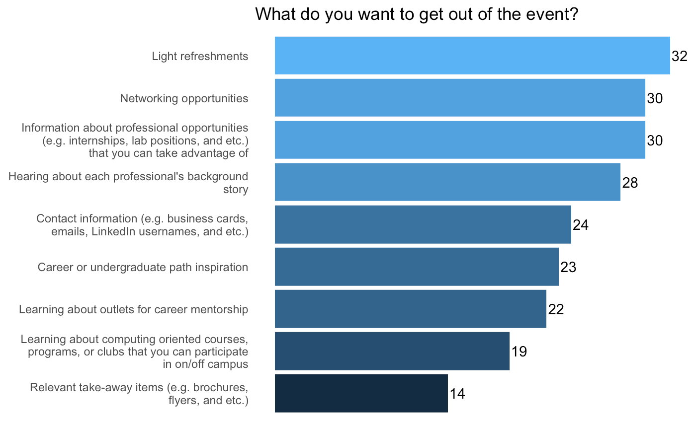
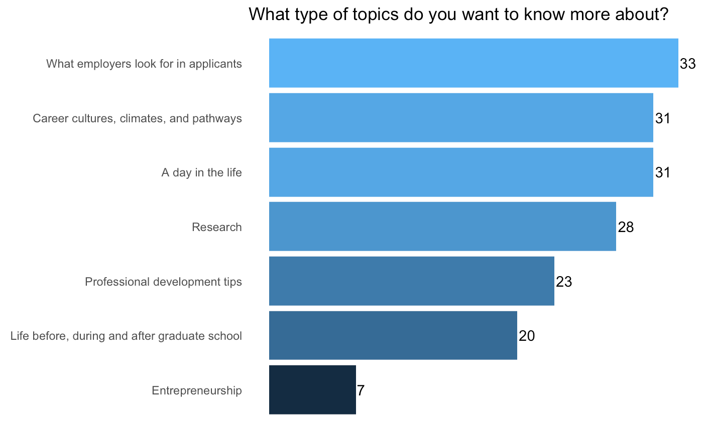

My Last Undergrad Semester
The start of my final semester as an undergraduate student is well on its way! It is already a whirlwind of new experiences. As I wrap up my degree, I have had the pleasure of meeting awesome new peers—both on and off campus—and multiple professors in interesting classes. Oh, and my schedule is amazing!
With some of my newfound time, I started the year off with a goal in mind: to carry out an event to galvanize interest in computing.
The UMass STEM Ambassadors Program
Since my freshman year, I have participated in the STEM Ambassadors Program (STEM AP). It is a community that is meant to foster positive relationships between STEM peers of all majors. Ultimately, the program’s goals are to:
- promote levels of STEM retention
- encourage students to enroll in graduate studies
- increase interest in STEM careers
All of this is fulfilled through the means of workshops and activities pertaining to STEM careers, medical school, research, internships, community building, and etc. As an informatics and data science major however, I noticed that there was a need for computing oriented events.
The ECEP Alliance
As a participant in REUMass during the summer of 2017, I was able to work with the Expanding Computing Education Pathways (ECEP) alliance under an NSF grant.
There, I supported their mission to broaden participation in computing (BPC) throughout the U.S. by working on the UX/UI of their internal site. I used an ideo.org inspired human-centered design approach for this project. Consequently, it required me to routinely collect insight from ECEP and go through several iterations.
Although the link to data science was not immediately apparent to me, the bond that one establishes with their stakeholders to foster cooperation, consistency, and a mutual understanding was a salient takeaway for me. In data science, this bond manifests when one incorporates their stakeholders when creating visualizations, conducting analyses, carrying out research, and etc.
Subsequently, after being exposed to ECEP and their work that summer, I recall feeling inspired about how I can make a change in my own communities through the means of computing. It was then that I realized something: I probably would not be on my own path in computing if I did not attend an event that encouraged a switch to informatics (from biology) during my freshman year.
The UMass STEM Ambassadors “Ask Me Anything” Event
As a result, when Dr. Carolyn Gardner-Thomas, the director of STEM AP, asked the program’s seniors to figure out a way to engage STEM AP’s younger members, I leapt at the opportunity and decided to put on a computing oriented event.
On March 4th, 2019, I will host professionals and students in computing oriented careers and majors for a live “Ask Me Anything” event. It will be presented in a speed-dating format where all of the STEM Ambassador students will rotate every couple of minutes between the attendees.
The event will focus on exposing students to the breadth of careers and opportunities that are feasible in the context of computing. By giving the STEM AP students a chance to ask a handful of professionals and students anything in a casual environment, I hope to galvanize interest in computing and inspire pathways towards potential careers.
Surveying STEM AP
As I looked for professionals and students to attend, I circulated a survey to help inform my search. This was done to avoid assuming the needs of my peers. I felt like this was the best way to get some insight about what everyone was interested in asking and knowing more about. The survey was administered through Google Forms. I asked two main questions:
- What do you want to get out of the event?
- What type of topics do you want to know more about?
For both, participants had the option of selecting more than one response. After a week, I cleaned and analyzed the resulting data in R Studio.


What’s Next?
Although I had a good idea of who to invite, the collected data will help me steer the event in a direction that works for everyone. Not pictured are the specific jobs, topics, and professionals that were requested in some of the responses. With the results in mind, I can now make a more targeted search as the event comes into view.
And when it happens, I hope the event sparks a flame that encourages my peers to investigate their options in the context of computing and beyond.